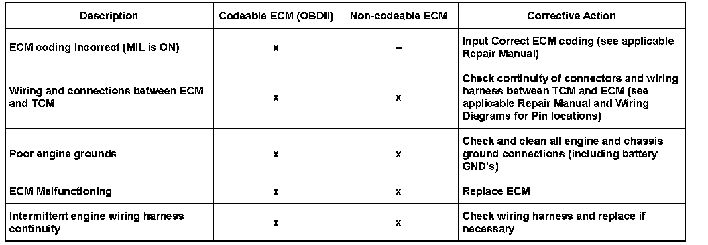

Engine Controls - DTC's 00545/00638 Stored
ConditionDTC's 00545 and 00638 Stored in DTC Memory

01 07 01 Jan. 8, 2007, 2004396, Supersedes Technical Bulletin Group 01 number 97-13 dated May 23, 1997 due to inclusion into ElsaWeb.
Technical Background
May be caused by:
- Incorrect Engine Control Module (ECM) coding (codeable ECM only).
- Wiring harness and/or connections between Transmission Control Module (TCM) and ECM.- Malfunctioning ECM.
- Intermittent continuity in engine harness.
- Poor engine compartment ground (GND).
Production Solution
Not Applicable.
Service
If vehicle exhibits this condition use the following table as a guide for repairs:

- Erase DTC memory, road test vehicle and recheck for any stored DTC's.
Warranty
Information only.
Required Parts and Tools
No Special Tools required.
No Special Parts required.Always see ETKA for the latest part(s) information.